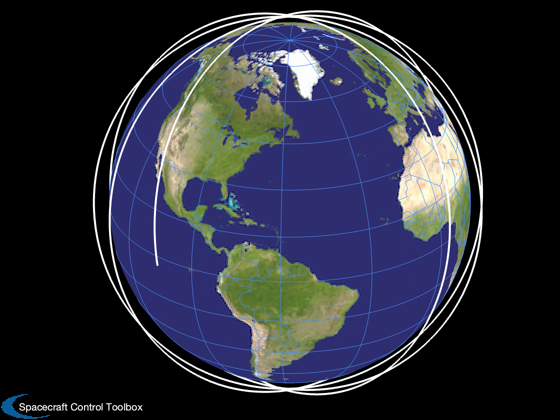
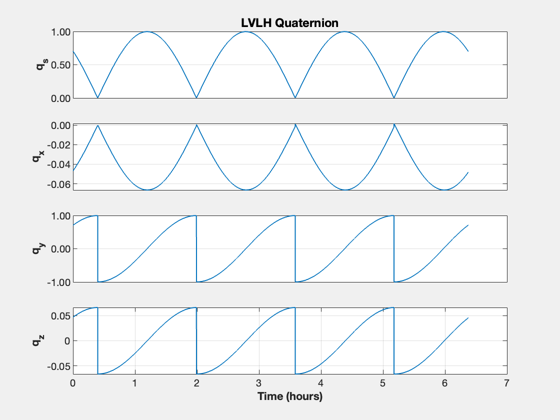
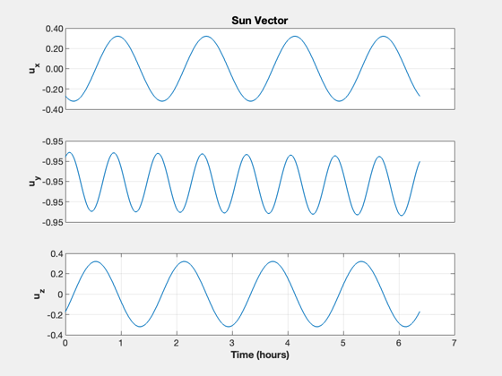
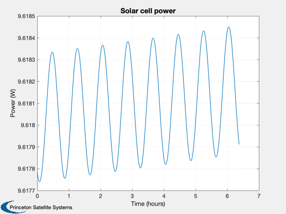
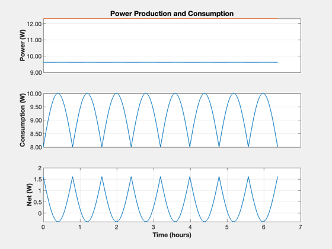

Contents
Sun Synchronous Orbit power model
Compute the inclination to be sun-synchronous at the specific date. Computes the sun vector in the local frame (LVLH) and the power generation from a solar array model. Try changing the ascending node to see how much power is generated with LVLH pointing.
See also: Date2JD, Constant, SunSyncInclination, Period, RVFromKepler, PlotOrbit, QLVLH, TimeHistory, SunV1, QForm, SolarCellPower, CubeSatPowerAnalysis
%-------------------------------------------------------------------------- % Copyright (c) 2023 Princeton Satellite Systems, Inc. % All rights reserved. %--------------------------------------------------------------------------
Constants
SOLAR_FLUX = 1367; % W/m2 at 1 AU R_EARTH = Constant('equatorial radius earth');
Spacecraft parameters
eff = 0.3; % solar array efficiency area = 0.1*0.3; % 3U CubeSat panel, full coverage peakPower = 2; % W basePower = 8; % W
Julian day number is needed
dateOfSim = [2024 1 1]; jD0 = Date2JD(dateOfSim);
Find the orbit
The ascending node sets the sun angle to the orbit including whether the satellite will see eclipses.
altitude = 550; % km sMA = R_EARTH + altitude; inc = SunSyncInclination(sMA); % assume zero eccentricity W = 0; % ascending node (rad) el = [sMA inc W 0 0 0]; p = Period(sMA); [r,v,t] = RVWithJ2(el,jD0,4*p,0.001082); PlotOrbit(r,t,jD0); % Spacecraft is flying fixed to the LVLH frame % z is in the -r direction % y is in the - rxv direction % x completes the set; along v in a circular orbit qECIToLVLH = QLVLH(r,v); yL = {'q_s' 'q_x' 'q_y' 'q_z'}; TimeHistory(t,qECIToLVLH,yL,'LVLH Quaternion'); 
Compute the sun vector
jD = jD0 + t/86400;
uSunECI = SunV1(jD);
uSunLVLH = QForm(qECIToLVLH, uSunECI);
yL = {'u_x' 'u_y' 'u_z'};
TimeHistory(t,uSunLVLH,yL,'Sun Vector');
% max expected power from the array if directly sun-pointing
powerMax = area*SOLAR_FLUX*eff;
% estimate demand from the spacecraft
powerCycle = basePower + peakPower*abs(sin(2*pi*t/p));
% now compute the power along the actual orbit assuming the arrays are
% aligned on LVLH y vector (orbit normal)
d = SolarCellPower; % 1U
d.solarCellEff = eff;
d.solarCellArea = area*[1 1];
d.solarCellNormal = [0 0;1 -1; 0 0]; % along orbit normal
DispWithTitle(d.solarCellNormal,'Solar Panel Normals, body frame')
CubeSatPowerAnalysis( d, qECIToLVLH, r, jD ); % plot
power = CubeSatPowerAnalysis( d, qECIToLVLH, r, jD );
net = power - powerCycle;
yL = {'Power (W)' 'Consumption (W)' 'Net (W)'};
TimeHistory(t,[power;powerMax*ones(size(power));powerCycle;net],yL,'Power Production and Consumption',...
{[1 2],3,4});
%--------------------------------------
% $Date$
% $Id: 50506edaf87433790f898534172dc384994e3cc2 $
Solar Panel Normals, body frame
0 0
1 -1
0 0
  